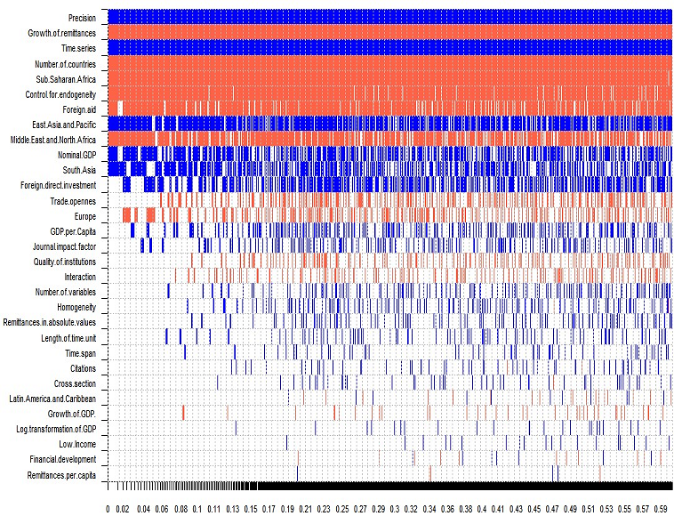

Expatriate workers' remittances represent an important source of financing for low- and middle-income countries. No consensus, however, has yet emerged regarding the effect of remittances on economic growth. In a quantitative survey of 538 estimates reported in 95 studies, we find that approximately 40% of the studies report a positive effect, 40% report no effect, and 20% report a negative effect. Our results indicate publication bias in favor of positive effects. Correcting for the bias using recently developed techniques, we find that the mean effect of remittances on growth is still positive but economically small. Nevertheless, our results uncover noticeable regional differences: remittances are growth-enhancing in Asia but not in Africa. Studies that do not control for alternative sources of external finance, such as foreign aid and foreign direct investment, mismeasure the effect of remittances. Finally, time-series studies and studies ignoring endogeneity issues find systematically larger effects of remittances on growth.
Fig: Study design systematically affects the reported nexus between remittances and growth

Reference: Alina Cazachevici, Tomas Havranek, and Roman Horvath (2020), "Remittances and Economic Growth: A Meta-Analysis." World Development 134, 105021.